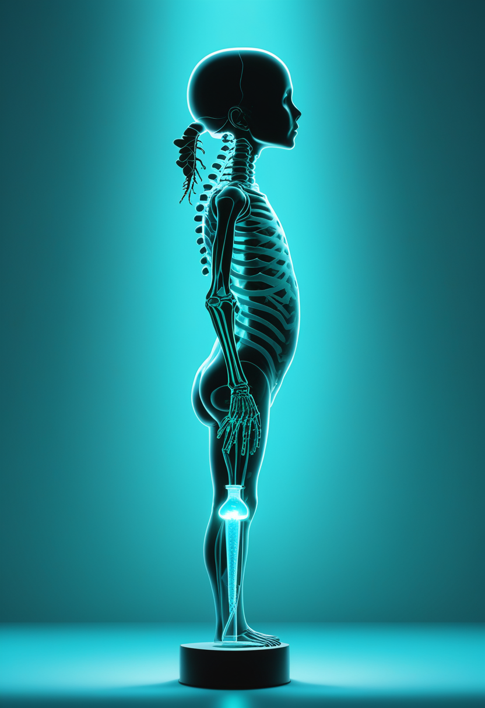
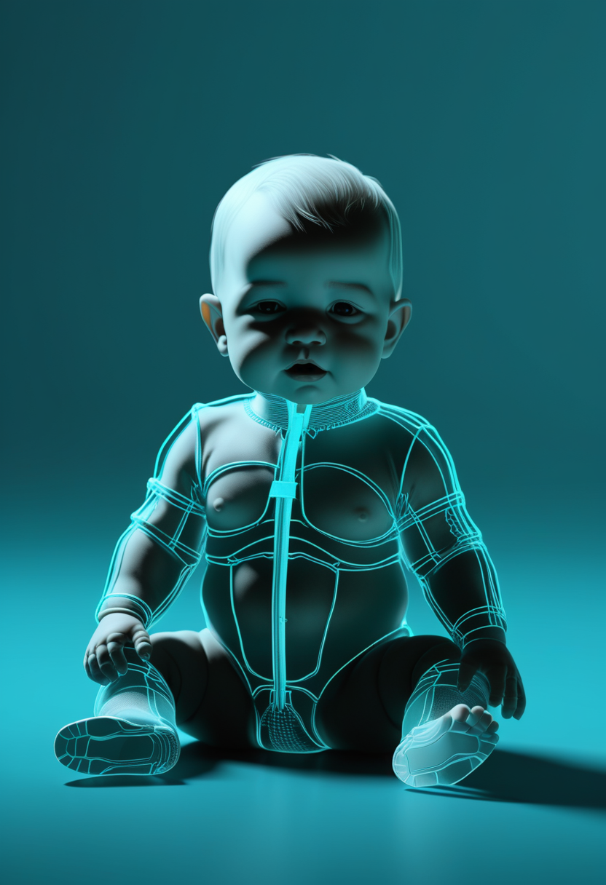
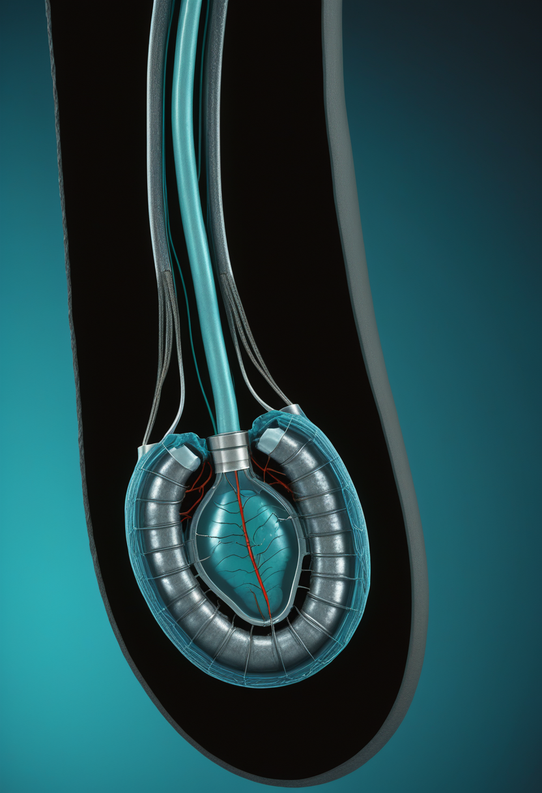
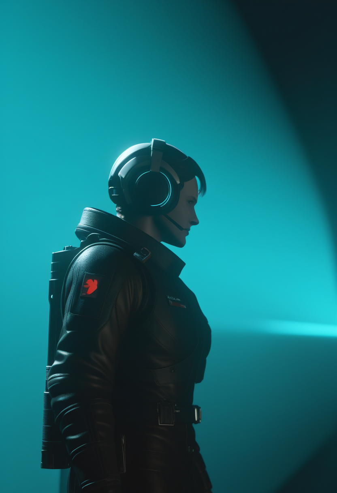
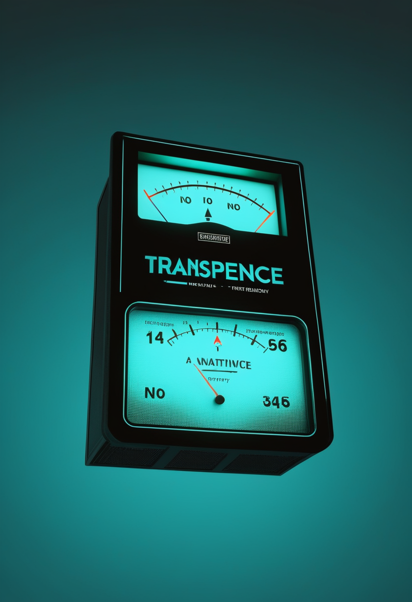
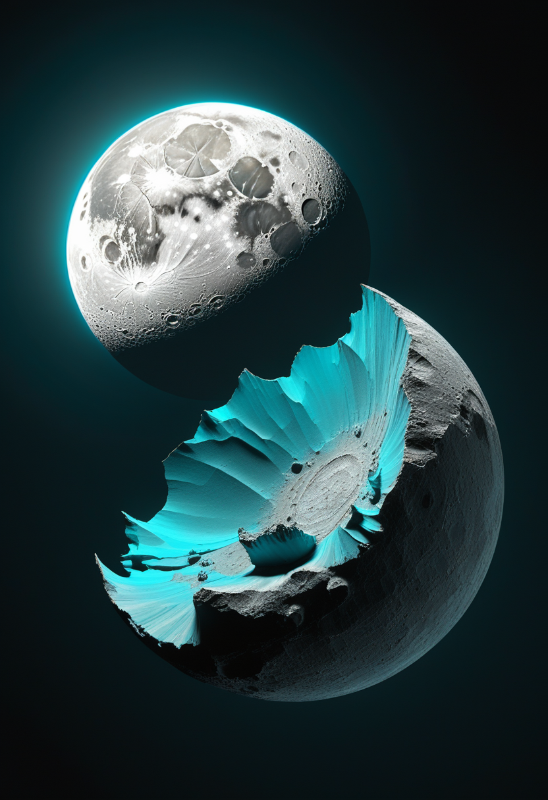
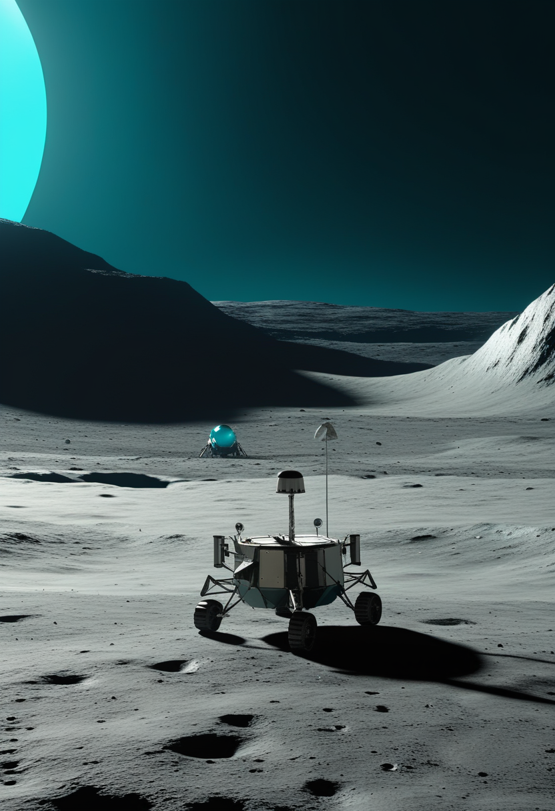
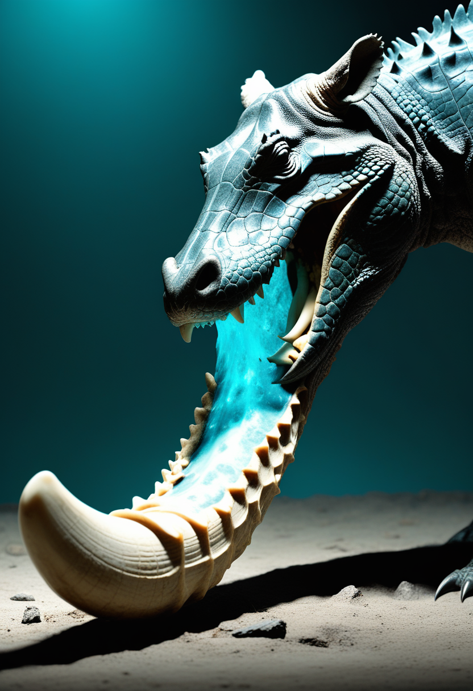
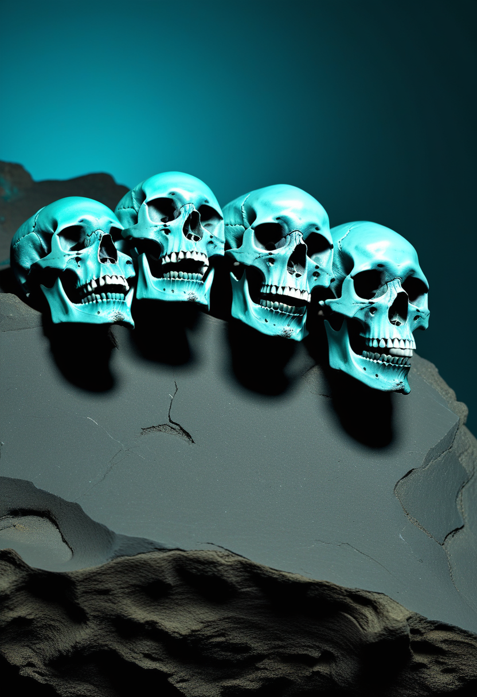

木曜日の便り。コンゴ民主共和国のブンディブジョ型エボラ出血熱は、8月16日までのデータで確定5,021例・死者2,378人に達し、751人が現在も隔離入院下にあることがWHOアフリカ地域事務局の8月18日発表で確認された。国連は接触者追跡率が初めて全国で85%を超えたと伝える一方、感染は依然として検知を上回るペースで広がっている。追い打ちをかけるように、UNICEFは8月12日、西・中央アフリカ6カ国で国境を越えたコレラの流行が急拡大していると発表、ナイジェリアだけで年初来5万例超・死者338人に上ると報告した。命の章では、髄腔内投与型遺伝子治療の対象年齢が2〜17歳に広がり、無症状の乳児の43%に軟口蓋閉鎖の低下が見つかるなど、SMAケアの焦点は生存後の質へ移っている。自由の章では、脳と脊髄を同時刺激して感覚と運動を取り戻す『二重神経バイパス』が報告され、Synchronは2億ドルの資金調達でBCIの本承認試験に向かう。そして畏敬の章では、中国の嫦娥7号が月の南極の水氷探査へ来週打ち上げを控え、ジェイムズ・ウェッブは海王星の衛星に『壊された氷の世界』の痕跡を見出した ― 地上の危機と足元の対応、そして遠い氷の記憶が、同じ一日の中で並走した。
WHOアフリカ地域事務局が8月18日に発表したところによると、コンゴ民主共和国のブンディブジョ型エボラ出血熱は8月16日までのデータで確定5,021例・死者2,378人に達し、751人が現在も隔離入院下にある。国連ニュースは、接触者追跡率が全国で初めて85%を超えたと伝える一方、『感染は依然として症例の発見・隔離を上回るペースで広がっている』というWHOの警告を伝え、死亡の6〜7割が医療から離れた地域社会の中で起きているとした。同じ週、UNICEFは8月12日、コンゴ、コンゴ共和国、ナイジェリア、チャド、カメルーン、中央アフリカ共和国の6カ国で国境を越えたコレラの流行が急拡大していると発表した。ナイジェリアだけで年初来5万例超・死者338人に上り、チャド湖流域とコンゴ川流域という2つの越境回廊が感染を運んでいるという。

米MDA2026臨床科学会議で発表されたSTEER試験の結果によると、Novartisの遺伝子治療オナセムノゲンアベパルボベクを髄腔内投与する新製剤『Itvisma』を2〜17歳のSMA患者に投与したところ、Hammersmith機能運動評価尺度(HFMSE)の改善幅が投与群で2.39ポイント、対照群で0.51ポイントとなり、統計的に有意な差が確認された。従来の静脈内投与は2歳以下に限られていたが、髄腔内投与では体重に依存しにくく、より年齢の高い患者にも遺伝子治療の対象を広げられる可能性が示された。

同じくMDA2026で発表された研究では、治療を受けている無症状のSMA乳児を対象に嚥下機能を精査したところ、43%に軟口蓋閉鎖の低下という所見が確認された。運動症状が表に出ていない段階でも、哺乳や誤嚥に関わる機能に見えない変化が生じている可能性を示す結果で、研究チームは早期からの嚥下評価をケアに組み込む必要性を指摘した。新生児スクリーニングと早期治療で運動機能の予後が大きく改善した今、次の課題は目に見えにくい部分の機能をどう継続的に監視するかに移っている。
NeurologyLiveが8月18日に伝えたところによると、疾患修飾薬によってSMA患者の生存期間と運動機能が大きく改善した今、ケアの優先課題は栄養管理の再設計に移りつつある。管理栄養士のStacey Tarrant氏は、従来の『体重維持』中心の栄養指導から、成長・筋力・機能・体組成を総合的に最適化する個別化アプローチへの転換が必要だと指摘する。かつては乳幼児期を生き延びることが目標だったSMAケアは、今や思春期・成人期を見据えた長期的な体づくりの段階に入っている。
髄腔内投与という新しい届け方が遺伝子治療の対象年齢を広げ、無症状の乳児の中にも見えない変化が見つかり、生き延びた先の栄養管理が新たな設計課題になる ― 今日集まった3つの話は、SMAケアの焦点が『治療の有無』から『治療後の質をどう底上げするか』へ完全に移ったことを物語っている。
米Feinstein研究所の研究チームが、潜水事故で四肢麻痺となったKeith Thomas氏を対象に、脳インプラントと脊髄への電気刺激を組み合わせた『二重神経バイパス』システムを実証したとSTATが8月16日に報じた。脳と脊髄へ同時に微弱な電流を送ることで、Thomas氏は腕と肩を持ち上げ、愛犬の毛並みを撫でてその感触を再び感じ取れるようになったという。2023年に脳インプラントを受けて以来続く実験的研究で、運動機能の再建にとどまらず、失われた触覚そのものを取り戻す試みとして注目される。
Blackrock Neurotechのチームが、脊髄損傷患者5人を対象に体性感覚野へ電極アレイを植込み、皮質内微小刺激(ICMS)によって手の触覚を人工的に呼び起こす技術の長期追跡結果をScience Translational Medicine誌に7月発表した。電極は2年から最長10年にわたり機能を維持し、重篤な有害事象は報告されなかった。刺激閾値は緩やかに上昇したものの、約6割の電極が10年後も安定して機能していたという。手の感覚を取り戻す技術が、実験段階から長期使用に耐えるかどうかという次の関門を越えつつある。

非開頭型BCI『Stentrode』を手がけるSynchronは2025年11月、シリーズDで2億ドルを調達したと発表した。累計調達額は3億4,500万ドルに達し、資金はFDAへの本申請(PMA)を見据えた2026年のピボタル試験と、商用化に向けた体制整備に充てられる。同社はまた、AppleのBCI Human Interface Deviceプロトコルへのネイティブ対応を進め、臨床試験参加者がStentrode経由でApple Vision Proのカーソルを実際に操作できる段階に入った。ピボタル試験に成功すれば、埋込み型BCIとして初のFDA本承認取得企業になる可能性がある。
脳への衝撃を最小化しながら失った感覚と運動を取り戻す2つの研究と、埋込み型BCIの商用化に向けて資金と規制の両輪を回すSynchron ― 自由の章は今日、『技術が動くこと』の証明から『長く安全に使い続けられ、市場に届くこと』の証明へと重心を移した。

WHOアフリカ地域事務局が8月18日に更新した情報によると、コンゴ民主共和国のブンディブジョ型エボラ出血熱は8月16日までのデータで確定5,021例・死者2,378人に達し、751人が現在も隔離入院下にある。国連ニュースは、接触者追跡率が全国で初めて85%を超えたと伝える一方、WHOは『感染は依然として症例の発見・隔離を上回るペースで広がっている』と警告し、死亡の6〜7割が医療から離れた地域社会の中で起きていると指摘した。ワクチンも特異的治療薬もないブンディブジョ型に対し、接触者追跡と隔離が対応の柱であり続けている。
UNICEFは8月12日、コンゴ民主共和国・コンゴ共和国・ナイジェリア・チャド・カメルーン・中央アフリカ共和国の6カ国でコレラの流行が国境を越えて急拡大していると発表した。ナイジェリアは域内最大の流行を抱え、年初来の累計症例は5万例超、死者338人に達する。感染はチャド湖流域(チャド・カメルーン・ナイジェリアで共通のビブリオ菌株が確認)と、コンゴ川流域(コンゴ民主共和国・コンゴ共和国・中央アフリカ共和国を結ぶ)という2つの越境回廊に沿って広がっており、季節性の降雨・洪水・人口移動が拡大に拍車をかけている。UNICEFは対応強化のため6か月間で1,500万ドルの追加資金を求めている。

総務省消防庁の集計によると、2026年8月10日から16日までの1週間に熱中症で救急搬送された人は全国で3,132人だった。前週(8月3〜9日)の7,611人から半減以上に減少しており、記録的な猛暑が続いた8月上旬に比べ負荷はやや和らいだ形となる。厚生労働省は5月から9月まで『STOP!熱中症 クールワークキャンペーン』を展開し、職場における熱中症防止のための新ガイドラインに基づく対策を呼びかけている。搬送者数の増減は天候に左右されやすく、残暑が続く限り注意が必要な状態は変わらない。
コンゴのエボラは追跡率という『対応の速さ』で初めて実感できる前進を見せ、コレラは逆に2つの回廊を伝って新たに越境し、日本の熱中症搬送は単純に天候の波で半減した ― 基盤の章が今日並べたのは、進歩・拡大・気候という異なる3つの力学が同時に公衆衛生を動かしている現実そのものだった。

JWSTの分光観測により、ネプチューンの内側を回る衛星ラリッサとガラテアの表面に、大きな氷天体の内部でのみ生成されるマグネシウムに富む粘土鉱物が存在することが判明したとする研究が7月29日、Science Advances誌に発表された。この粘土鉱物は、液体の水と岩石が氷天体の内部で長期間接触して初めて形成される。研究チームは、約40億年前にトリトンが外部からネプチューンの衛星系に飛び込み、当時存在していたより大きな衛星群を破壊した名残がこの粘土鉱物だと解釈しており、今の小さな内側衛星たちは、その破壊された衛星系の破片である可能性が高いという。
NASAは8月13日、火星探査車パーサヴィアランスが搭載カメラMastcam-Zで、火星の衛星フォボスが太陽の前を横切る様子を撮影したと発表した。前日8月12日には地球でも本物の皆既日食が観測されており、その翌日に火星の『日食』が捉えられた形となる。同探査車は7月2日のデータからも、約3億1,400万kmかなたの地球がフォボスの陰に隠れて一つの光点として消えていく様子を撮影しており、別の惑星の地表から地球が他の天体の陰に隠れる瞬間を記録したのは今回が人類初とされる。

中国国家航天局は8月19日、無人月探査機『嫦娥7号』を海南島・文昌宇宙発射場の発射台へ移送したと明らかにした。月の南極地域の環境資源調査を目的とし、周回機・着陸機・ローバーに加え、恒久的に太陽光の届かない『永久影クレーター』内部を跳躍しながら探査する小型ホッピング機を搭載する。高精度な軟着陸や脚部歩行、永久影探査という複数の新技術の実証を掲げており、国際協力も予定されている。2030年ごろを目標とする中国の有人月面着陸計画の先駆けとなるミッションとして位置づけられている。
海王星の衛星に刻まれた40億年前の破壊の記憶、火星から見た地球の束の間の消失、そして月の南極の永久影に挑もうとする嫦娥7号 ― 畏敬の章が今日並べたのは、途方もない過去を読み解く目と、まだ誰も足を踏み入れていない場所へ挑む足が、同じ太陽系の中で同時に動いている光景だった。
ペルーの考古学者Gladys Paz氏らのチームが8月18日、首都リマにある古代アドベ製ピラミッド『ワカ・プクリャーナ』近くで、儀礼的な犠牲と考えられる成人男性の人骨を発掘したと発表した。西暦650年ごろ、リマ文化(1〜7世紀)の時代のものと暫定的に年代付けられている。遺体は儀礼用の池に通じる水路の中に左側臥位で埋葬され、頭部はピラミッドと太平洋の両方を向いていたという。研究チームは、この埋葬が水路を閉じる儀式の一環だった可能性があるとみており、数百年前に行われた祭祀の具体的な手順を再構成する手がかりとして注目している。

ヘルシンキ大学のOscar Wilson氏らコロンビア・フランス・アルゼンチン・カナダ・米国の国際チームが、コロンビア・ラベンタ地域で見つかった中期中新世の大型有蹄哺乳類3種の化石骨4点を分析し、絶滅した巨大カイマン『Purussaurus neivensis』による捕食の証拠を示す論文を8月16日、Journal of Vertebrate Paleontology誌に発表した。骨には円形や二分された刺し傷、押しつぶされた痕が残り、歯1本あたり4万ニュートン近くに達する咬合力と一致するという。体長6mを超えるこの巨大カイマンが、当時の生態系の頂点捕食者として大型哺乳類を襲っていたことを裏付ける直接証拠となる。

岡山理科大学・東京都市大学・きしわだ自然資料館などの研究チームが、約30年前に大阪府岸和田市で採集されたモササウルス化石を含む岩塊から、これまで未認識だった4点の骨を新たに識別したと発表した。中でも前上顎骨(上顎の最前部の骨)は日本のモササウルス化石として初めて確認された部位だという。脳函近くの基蝶形骨に見られる横向きの突起や、既知種にはない溝の欠如など、既存のどの種とも一致しない特徴があり、新種である可能性が浮上している。研究成果は6月27日、大阪公立大学で開催された日本古生物学会第177回例会で発表された。
リマの水路に眠っていた儀礼の記憶、コロンビアの骨に刻まれた頂点捕食者の咬み跡、そして30年間棚に置かれていた大阪の岩塊から現れた新種の可能性 ― 美の章は今日、掘り出したその瞬間ではなく、後から読み直す目によって過去が更新され続けることを示していた。
WHOアフリカ地域事務局が8月18日に発表したところによると、コンゴ民主共和国のブンディブジョ型エボラ出血熱は8月16日までのデータで確定5,021例・死者2,378人に達し、751人が隔離入院下にある。国連は接触者追跡率が全国で初めて85%を超えたと伝える一方、同じ週にUNICEFは西・中央アフリカ6カ国でコレラが国境を越えて急拡大していると発表した。命の章では、髄腔内投与の遺伝子治療が2〜17歳のSMA患者にも対象を広げ、無症状の乳児の43%に嚥下機能低下の兆候が見つかった。自由の章では、脳と脊髄を同時刺激する『二重神経バイパス』が感覚と運動を同時に取り戻し、Synchronは2億ドルの調達でBCIの本承認試験に向かっている。畏敬の章では、JWSTが海王星の衛星に40億年前の衛星系崩壊の痕跡を見出し、中国の嫦娥7号が月の南極の永久影探査へ来週打ち上げを控える。そして美の章では、リマの神殿跡の人骨、コロンビアの巨大カイマンの咬み跡、大阪で見つかった新種の可能性を秘めたモササウルスの骨が、それぞれの時代の記憶を今に伝えている ― 広がり続ける危機と、それでも前を向く対応、そして遠い記憶の発見が、同じ木曜日の朝に並走した。
では、また明日の朝に。 — JaH